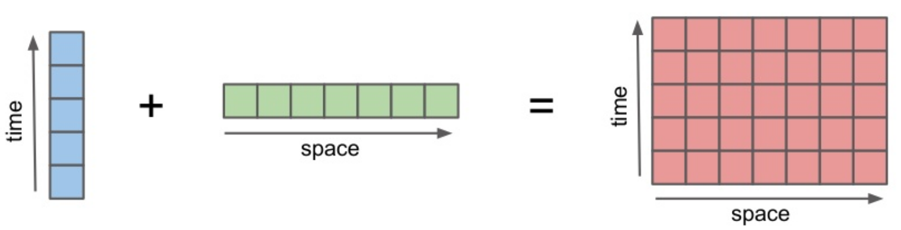

layout: true <div class="header-wrap"> <div class='logo-left'><img src="figs/xarray-logo-notext.png" width="65px"/></div> <div class='title-warp'> <div class='title'>xarray: multi-dimensional data analysis in Python</div> <div class='authors'>Stephan Hoyer (1), Joe Hamman (2), Fabien Maussion (3) and Benoît Bovy (4)</div> <div class='affiliations'> (1) Google Research, Mountain View, CA, USA (2) NCAR, Boulder, CO, USA (3) University of Innsbruck, Austria (4) GFZ Potsdam, Germany </div> </div> <div class='logo-right'></div> </div> <div class="footer-logos"> <span>EGU Vienna 04-2017 (PICO)</span> <!--<img src="figs/pydata-logo.png" width="65px"/> --> </div> <div class="footer-wrap"> <ul> <li class='current-nav'>summary</li> <li>data structures</li> <li>indexing</li> <li>aggregation</li> <li>arithmetics</li> <li>plotting</li> <li>out-of-core</li> </ul> </div> --- # What is xarray? .orange[For Python / Numpy users] - xarray handles N-dimensional arrays with labels (dimension names & coordinates) and metadata. .orange[For Python / Pandas users] - xarray is a powerful, pandas-like toolkit for analytics on multi-dimensional arrays. .orange[For scientists familar with the netCDF format] - xarray implements the netCDF data model with a high level Python API. .orange[For scientists working with big datasets] - xarray (with dask) supports efficient, out-of-core computing for datasets that don't fit in memory. --- # numpy.array ```python >>> import numpy as np >>> a = np.array([[1, 3, 9], [2, 8, 4]]) >>> a ``` ``` array([[1, 3, 9], [2, 8, 4]]) ``` ```python >>> a[1, 2] # get the value at 2nd row and 3rd column ``` ``` 4 ``` ```python >>> a.mean(axis=0) # compute the mean column-wise ``` ``` array([1.5, 5.5, 6.5]) ``` <br/> Not well supported by numpy: - array dimensions and indexes often have a meaning, e.g., latitude / longitude and their coordinates. --- # xarray.DataArray ```python >>> import xarray as xr >>> da = xr.DataArray(a, dims=['latitude', 'longitude'], coords={'longitude':[11, 12, 13], 'latitude':[1, 2]}) >>> da ``` ``` <xarray.DataArray (latitude: 2, longitude: 3)> array([[1, 3, 9], [2, 8, 4]]) Coordinates: * longitude (longitude) int64 11 12 13 * latitude (latitude) int64 1 2 ``` ```python >>> da.sel(longitude=13, latitude=2) # easier to work with coordinate values! ``` ``` <xarray.DataArray ()> array(4) Coordinates: longitude int64 13 latitude int64 2 ``` ```python >>> da.mean(dim='latitude') # easier to remember dimension names! ``` ``` <xarray.DataArray (longitude: 3)> array([ 1.5, 5.5, 6.5]) Coordinates: * longitude (longitude) int64 11 12 13 ``` --- # xarray.Dataset A collection of `xarray.DataArray`, a netCDF file... ```python >>> ds = xr.open_dataset('ERA-Int-MonthlyAvg-4D-TUVWZ.nc') >>> ds ``` ``` <xarray.Dataset> Dimensions: (latitude: 241, level: 15, longitude: 480, month: 12) Coordinates: * latitude (latitude) float32 90.0 89.25 88.5 87.75 87.0 ... * level (level) int32 50 100 150 200 300 400 500 600 ... * longitude (longitude) float32 -180.0 -179.25 -178.5 ... * month (month) int64 1 2 3 4 5 6 7 8 9 10 11 12 Data variables: u (month, level, latitude, longitude) float64 10.38 ... v (month, level, latitude, longitude) float64 5.594 ... w (month, level, latitude, longitude) float64 -0.0003052 ... z (month, level, latitude, longitude) float64 1.888e+05 ... t (month, level, latitude, longitude) float64 201.1 ... Attributes: Conventions: CF-1.0 Info: Monthly ERA-Interim data. ``` --- # Powerful analytics - Advanced selection ```python ds.sel(latitude=47.26, method='nearest') # no need to provide exact coordinate values ``` - Aggregation ```python ds.mean(dim=['month', 'longitude']) ``` - Arithmetics ```python ds1 + ds2 # supports automatic broadcasting and alignment! ```  <img src="figs/align.png" width="300px"/> --- # Powerful analytics (2) - Plotting ```python import cartopy.crs as ccrs ax = plt.axes(projection=ccrs.Robinson()) ds.z.sel(level=1000, month=8).plot(ax=ax, transform=ccrs.PlateCarree()); ax.coastlines(); ``` --- # Powerful analytics (3) - Out-of-core computing ```python big_ds = xr.open_mfdataset('data*.nc') # lazy loading of many netCDF files # (>1GB) into a single xarray.Dataset big_ds.mean(dim=['longitude', 'latitude']) # lazy computation big_ds.load() # triggers efficient, multi-core computation (using dask) ``` - ... and more! --- # xarray - Open source - Very good integration with other Python libraries for scientific computing (SciPy / PyData Stack) - Documentation: http://xarray.pydata.org - Repository: https://github.com/pydata/xarray - 60 contributors (still growing) - Latest release: v0.9.2 (02.04.2017) - Umbrellas (no funding): Python for Data & NumFOCUS <img src="figs/pydata-logo.png" style="margin-left: 45px;" width="150px"/>